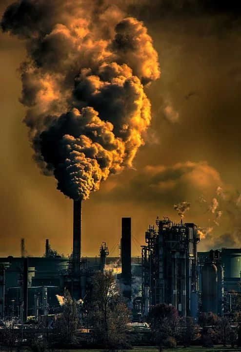

Pollution of air
Air pollution is contamination of the indoor or outdoor environment by any chemical, physical or biological agent that modifies the natural characteristics of the atmosphere.
pollutants of major public health concern include particulate matter, carbon monoxide, ozone, nitrogen dioxide and sulfur dioxide. Outdoor and indoor air pollution cause respiratory and other diseases and are important sources of morbidity and mortality.
WHO data show that almost all of the global population (99%) breathe air that exceeds WHO guideline limits and contains high levels of pollutants, with low- and middle-income countries suffering from the highest exposures.
Air quality is closely linked to the earth’s climate and ecosystems globally. Many of the drivers of air pollution (i.e. combustion of fossil fuels) are also sources of greenhouse gas emissions. Policies to reduce air pollution, therefore, offer a win-win strategy for both climate and health, lowering the burden of disease attributable to air pollution, as well as contributing to the near- and long-term mitigation of climate change.
| City |
Pollution Level |
| Delhi |
698 |
| Mumbai |
93 |
| Kolkata |
56 |
GLOBAL WARMING
Global warming is the long-term warming of the planet’s overall temperature. Though this warming trend has been going on for a long time, its pace has significantly increased in the last hundred years due to the burning of fossil fuels. As the human population has increased, so has the volume of fossil fuels burned.
The greenhouse effect is when the sun’s rays penetrate the atmosphere, but when that heat is reflected off the surface cannot escape back into space. Gases produced by the burning of fossil fuels prevent the heat from leaving the atmosphere. These greenhouse gasses are carbon dioxide, chlorofluorocarbons, water vapor, methane, and nitrous oxide. The excess heat in the atmosphere has caused the average global temperature to rise overtime, otherwise known as global warming
Global warming has presented another issue called climate change. Sometimes these phrases are used interchangeably, however, they are different. Climate change refers to changes in weather patterns and growing seasons around the world. It also refers to sea level rise caused by the expansion of warmer seas and melting ice sheets and glaciers. Global warming causes climate change, which poses a serious threat to life on Earth in the forms of widespread flooding and extreme weather. Scientists continue to study global warming and its impact on Earth.

Causes of Air pollution
Air pollution is contamination of the indoor or outdoor environment by any chemical, physical or biological agent that modifies the natural characteristics of the atmosphere.
Household combustion devices, motor vehicles, industrial facilities and forest fires are common sources of air pollution. Pollutants of major public health concern include particulate matter, carbon monoxide, ozone, nitrogen dioxide and sulfur dioxide. Outdoor and indoor air pollution cause respiratory and other diseases and are important sources of morbidity and mortality.Vehicle emissions, fuel oils and natural gas to heat homes, by-products of manufacturing and power generation, particularly coal-fueled power plants, and fumes from chemical production are the primary sources of human-made air pollution.
Nature releases hazardous substances into the air, such as smoke from wildfires, which are often caused by people; ash and gases from volcanic eruptions; and gases, like methane, which are emitted from decomposing organic matter in soils.

Effects of Air Pollution
What are the health consequences of air pollution on populations?
Exposure to high levels of air pollution can cause a variety of adverse health outcomes. It increases the risk of respiratory infections, heart disease and lung cancer. Both short and long term exposure to air pollutants have been associated with health impacts. More severe impacts affect people who are already ill. Children, the elderly and poor people are more susceptible. The most health-harmful pollutants – closely associated with excessive premature mortality – are fine PM2.5 particles that penetrate deep into lung passageways